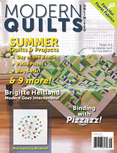
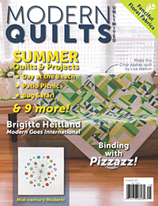

Modern Applique Quilts
I was drawn to the applique technique because I wanted to make quilts with icons and pictures (and because I do not have the patience to measure accurately enough for pieced techniques). I created my applique silhouettes from photographs, which made my style unique.


 

My quilting friends encouraged me to make patterns from my quilts, which got the proverbial ball rolling.
//another gallery--pattern covers and booksModern Wholecloth Quilts
Applique quilts are fun to design, but they aren't a great product because they are so time intensive. I experimented for a while to come up with a hand-made quilting technique that was efficient enough to be sold for reasonable profit while retaining the uniqueness of each piece.
> //look up how to create a gallery of images hereI was fortunate to be supported in this process by St. Louis's TechShop location and, later, MADE St. Louis.
//another gallery--TechShop and MADE photosFabric Designs
I got started in quilting because I wanted to design fabrics! I thought this would be a good way to use my art history background in a creative and entrepreneurial way. It took me several years and lots of work, but my designs were eventually licensed by a manufacturer and my first (and only) collection was released in 20**.
//look up how to create a gallery of images hereFabric design is the most fun job I've ever had. Unfortunately, it also paid the least and would never have allowed me to be financially independent.
//another gallery--pattern covers and booksOther Sewing
In addition to quilting, I've experimented with other types of textile work, including embroidery.
//look up how to create a gallery of images hereOther Design
More than anything, I was attracted to quilting and textile design because it allowed me to work on things I was passionate about (design, history, textiles, entrepreneurship, branding). I'm excited about front-end web development for the same reason. I can't wait to learn even more ways to express myself and communicate with others through coding!
//look up how to create a gallery of images here